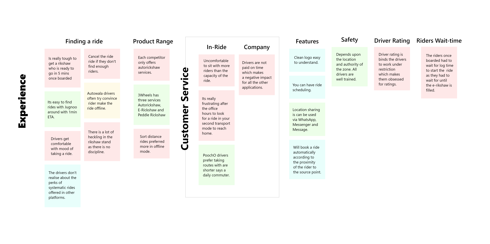
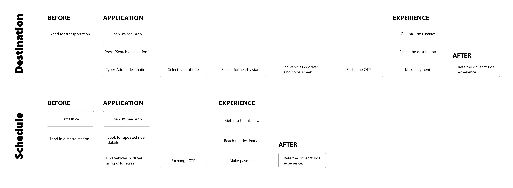
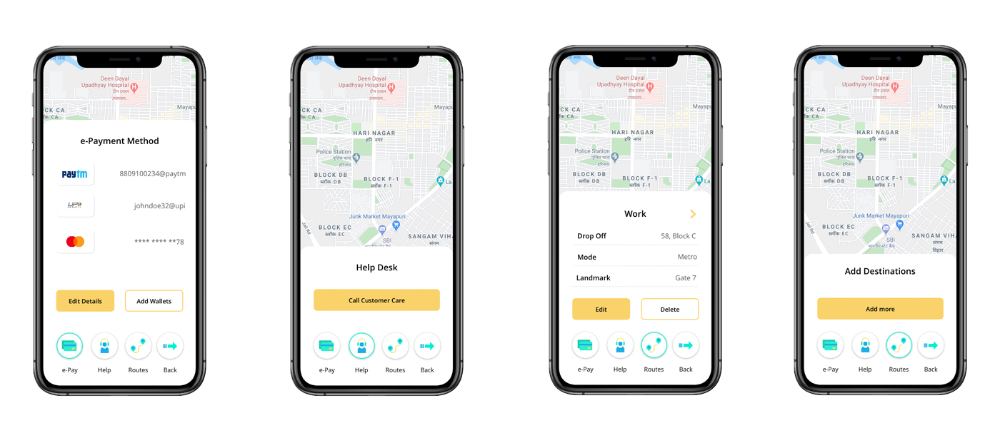
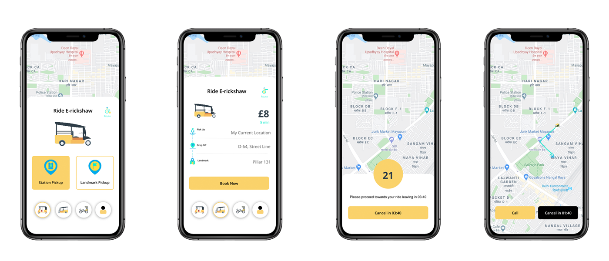

Rikshaw App
skills:Business Analysis, User Research, Activity Diagram, Architecture & Wireframes
tools:Invision, Adobe Photoshop, Adobe Illustrator
Introduction
A concept application which helps you book your local ferry post your primary commute mode looking at the location of the user. This application was designed for user who use daily commute in the same pattern. Its a minimal layer application for booking your die and available in a low-tire payment model.
Project Timeline (2 Weeks)

Primary Research
To determine the problem the project had to be specified with Business Problem, Business Outcomes, User & Customer and User Benefit. The four major question which specifies the need of problem solution will help to identify segment of solution and frame them in the right manner.
1. What are the loopholes of your already available solution in the market?
2. What are the solution your are looking?
3. Who are the prioritised customer and users?
4. What are the user goals ?
5. Why this proposed model will be a better solution?

Compititor Analysis

Market Prositioning
The four domain for the market position factor which defines the applications accessibility and usability. Private, Functional, Experience Based and Shared. Application like Autowala & Jugnoo are more preferred by the user those prefer private rides and often switch to share rides. While application like Pooch-O can be classified as a functional application for private ride. And looking at 3Wheel it fits well as a functional ride sharing application designed and specified for sharing rides in e-rickshaw, three-wheel auto and peddle rickshaw.

Affinity Mapping
The affinity mapping helped to focus on the real usability problems and frame the application to ease the implication. It is defined with just one aspect, which is experience which is a primary boundary for all the gathered insights.
Application Phases
The user experience scenario is classified for two main features of the application which are Destination (booking a ride to reach a destination) and Schedule. Where the three phases of the user journey are before using the application, while using the application to book a ride, experience in between journey and after using the application to complete user session.
Activity Diagram

Low-Fidelity Wireframes

MVP Interactions
The e-Payment method includes adding e-wallets such as Paytm, UPI etc. The payment methods can be added for multiple account for multiple wallets. Help option can call the customer care to resolve issues.
The application is majorly focused on E-rickshaw. The proposed idea is to have multiple landmarks in equal distance in a section of map. This will help to optimise the time distance grid and accuracy with the best usability animation.